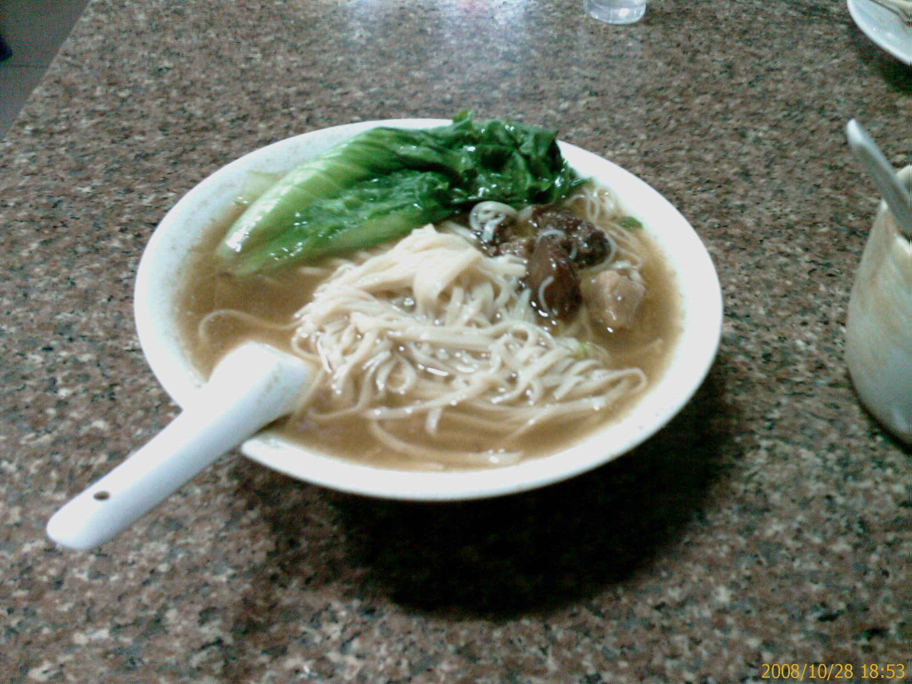

漂亮的背影
28/Oct 2008
今天晚餐又是我一個人解決
所以又跑去探險
路過一家沙縣小吃
剛好看到有個身材不錯的女生在裡面吃
所以我就進去看看了…XD
正面的話我沒有看的很仔細
不過印象中沒有很正
普通而已
不過這個背影看起來就不錯了
(我的位置真是剛好可以偷拍的好地點啊…XD)
看沒多久
我點的豬肚蓮子湯就來了
小小一碗要 5 塊錢
有點小貴
不過裡面還是有點料

這碗牛腩麵也是 5 塊錢

味道一般
偏鹹
剛剛那個女生還沒吃完就走了
大概是不合胃口吧
不過接著又來了一個長得也很普通的女生
也是找背對著我的位置坐下來
(今天真是…XD)
所以又偷拍了一張
吃飽買個水果回家
這個好像叫 XX 哈蜜瓜的
大小跟小玉西瓜差不多了
不過我結帳的時候才知道這個不便宜
這樣一顆要 41 塊…T_T
荷包大失血
不知道好不好吃…